Shows the whole season
Every week is laid out from Base to Taper, so you can see what is coming and move a workout to another day.
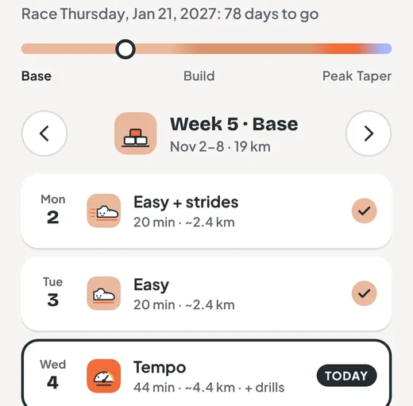
RunCo builds a plan around your race date and training days, then times every workout for you. The full running plan is free, from day one to race day.
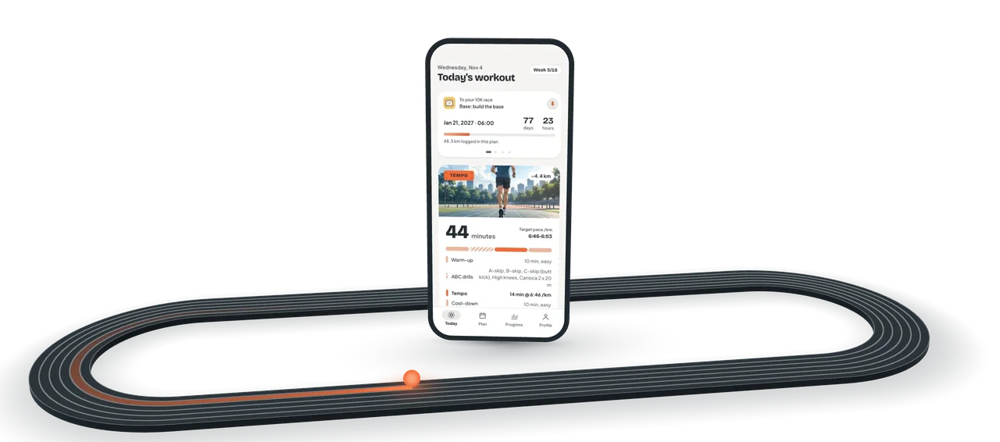
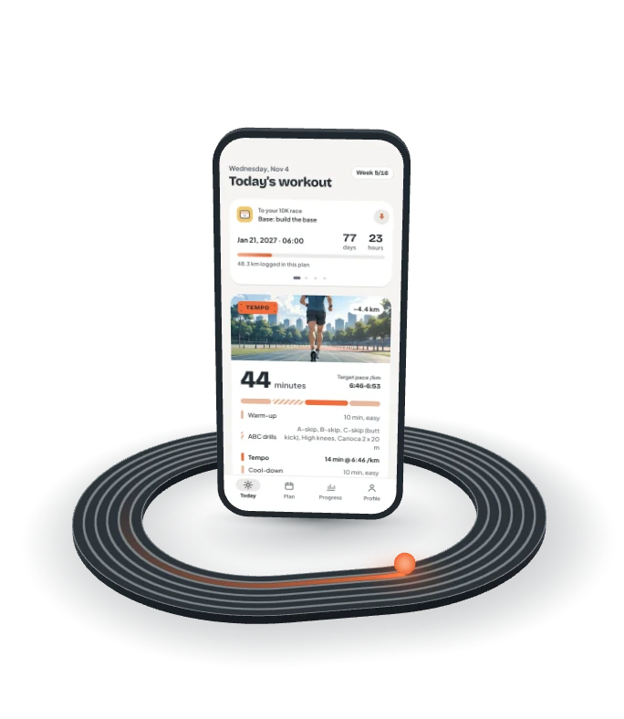
RunCo lays out every week from Base to Taper, with paces matched to your fitness.
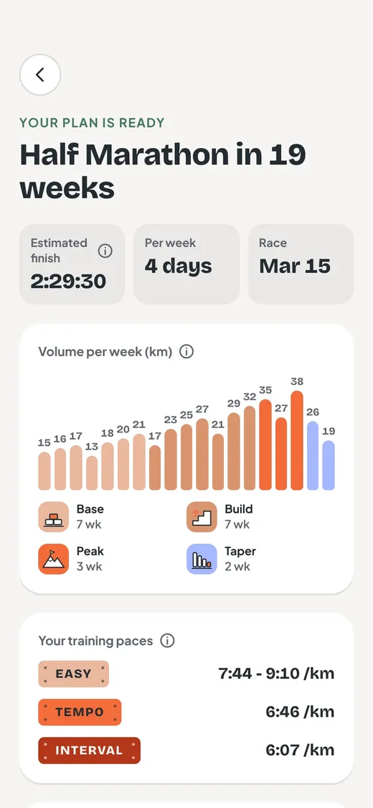
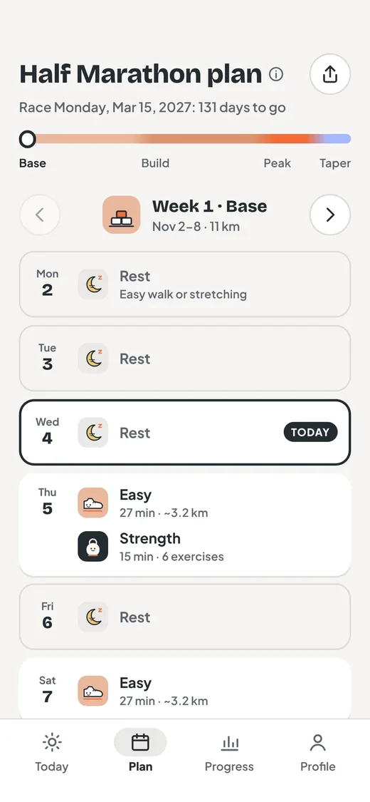
Privacy
Your plan, your runs, your effort ratings and your health answers stay on your phone. They are not sent to a server. The server only stores the account you sign in with.
Pick a job to see its screen in the app.
Every interval is counted down with your target pace on screen. Sound cues and haptics mark work, recovery, halfway and the last 3-2-1.
Optional bodyweight leg and core sessions of 15 to 30 minutes sit around your hard running days. The timer runs every set, rest and side switch.
Weekly volume, your easy pace trend and plan adherence share one screen. A race time range is predicted from your own training.
Each week closes with its distance, running time and workouts done. When a change would help, the summary suggests it with the reason and you decide.

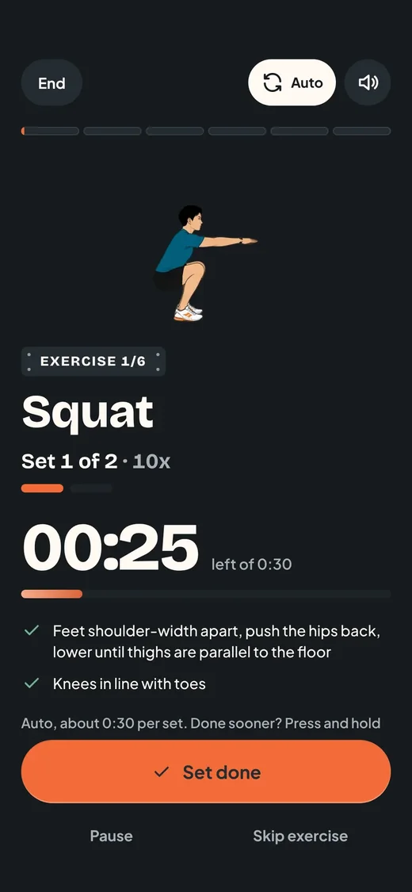
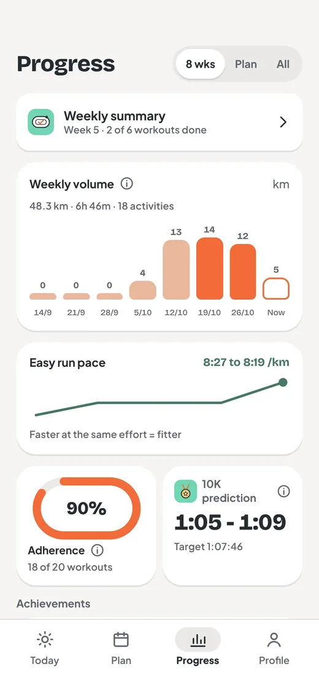
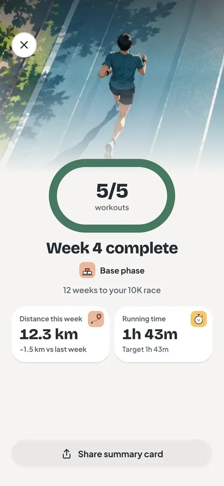
Every week is laid out from Base to Taper, so you can see what is coming and move a workout to another day.

Quality sessions start with A-skips, B-skips and high knees, listed with the rest of the workout.
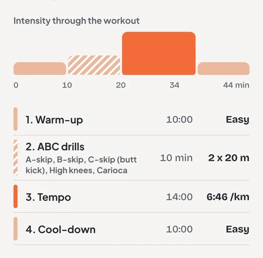
Save a backup file, restore it on a new phone, or delete everything on this phone when you want to.
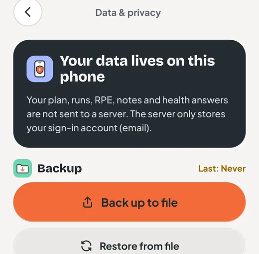
Easy, tempo and interval paces come from the race time you enter, and the plan shows them per kilometre.
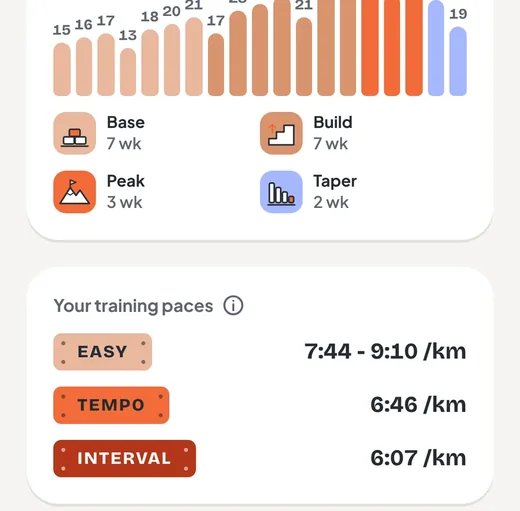
Open a workout and RunCo says why it is in your plan, in plain words. Each training rule carries its level of evidence and a link to its sources.
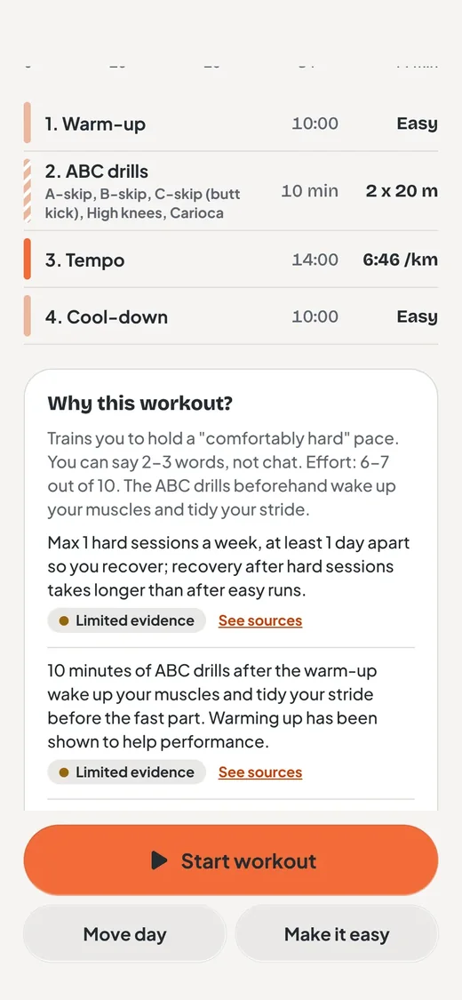
The plan, the timer, strength and progress, without sound.
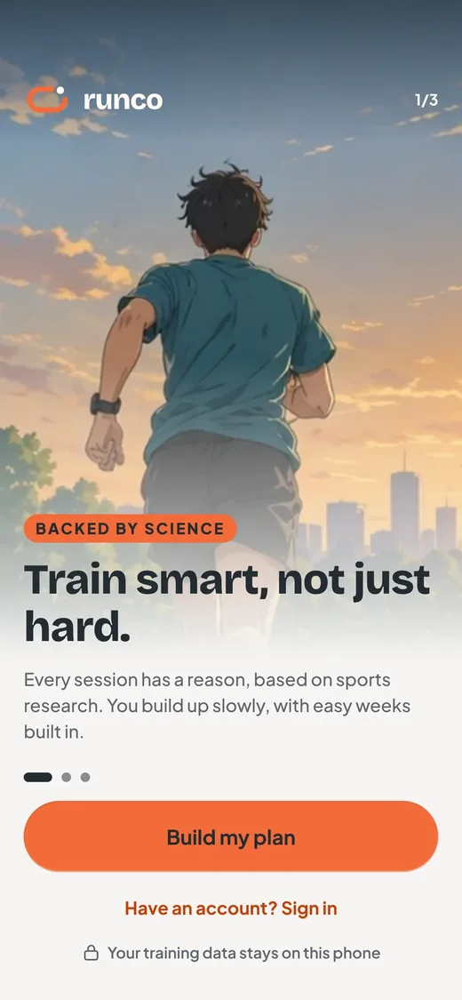
Running is free: the full plan, the timer and progress. Strength sessions are free for two weeks of a plan, then part of Premium, which is not on sale yet.
5K, 10K, half marathon and marathon, or fitness with no race.
Android phones and iPhones: Google Play or the App Store.
On your phone. Back it up to a file whenever you want.
No. Check with a doctor before you start a new program.